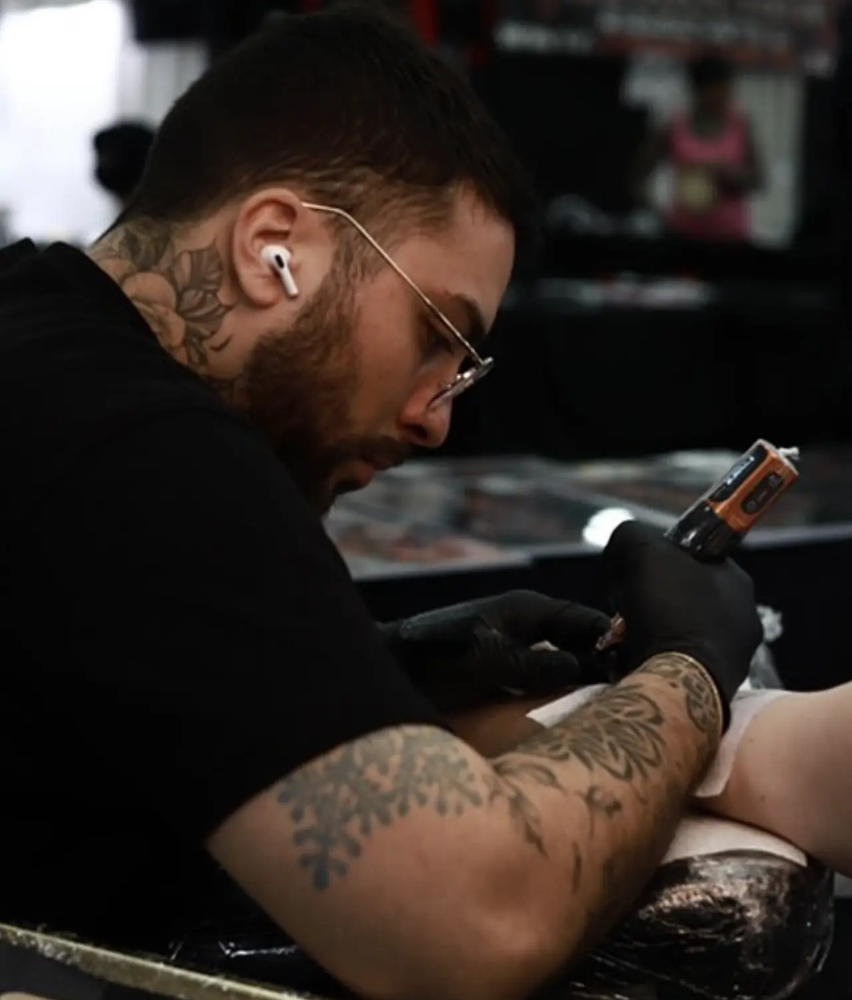
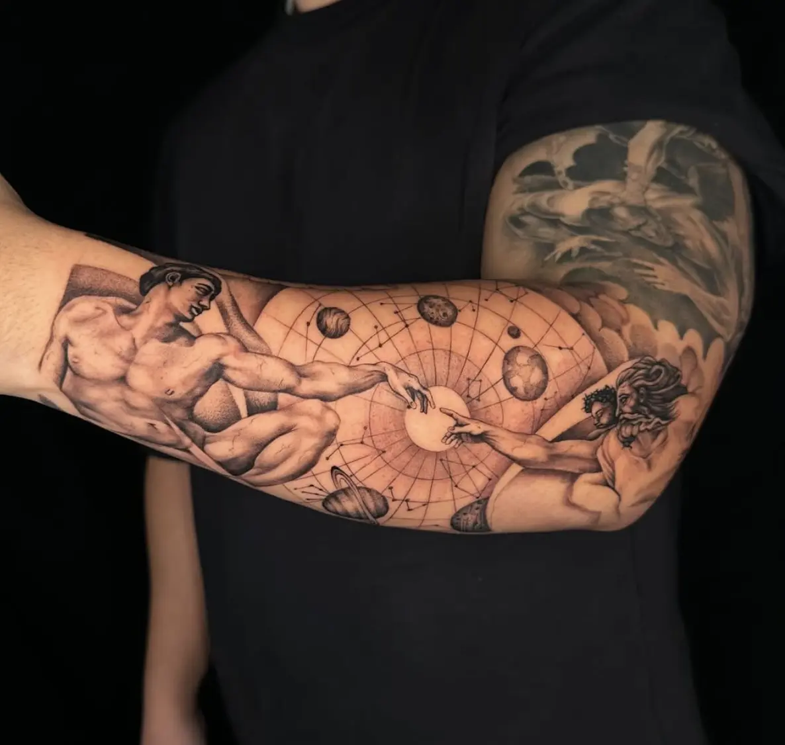
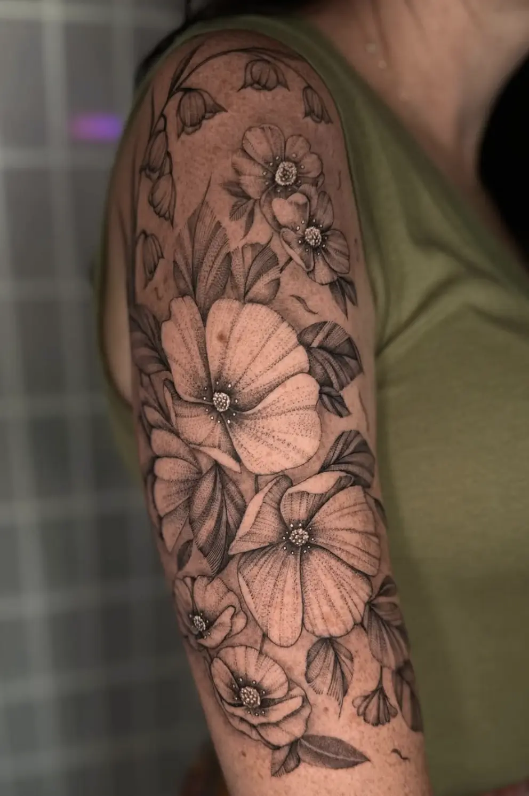
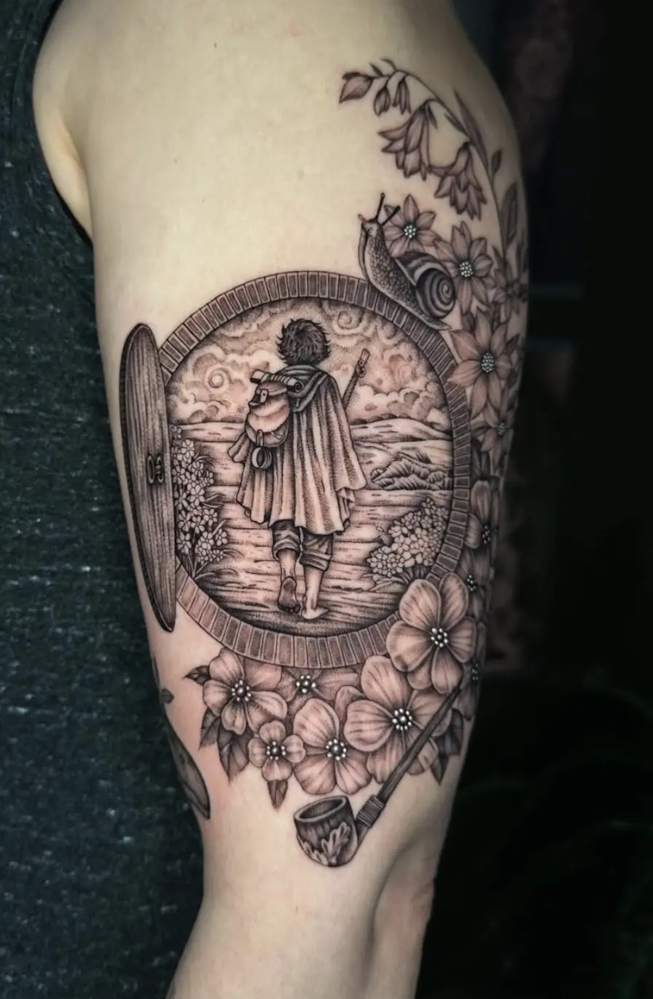
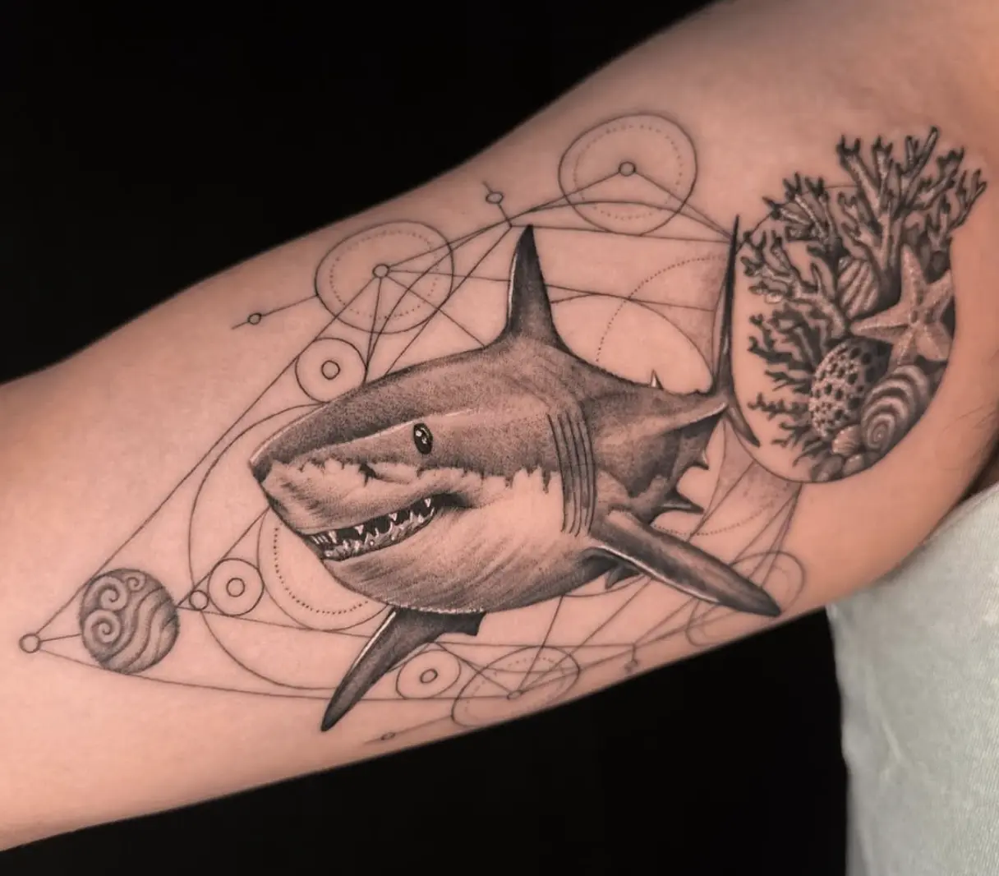
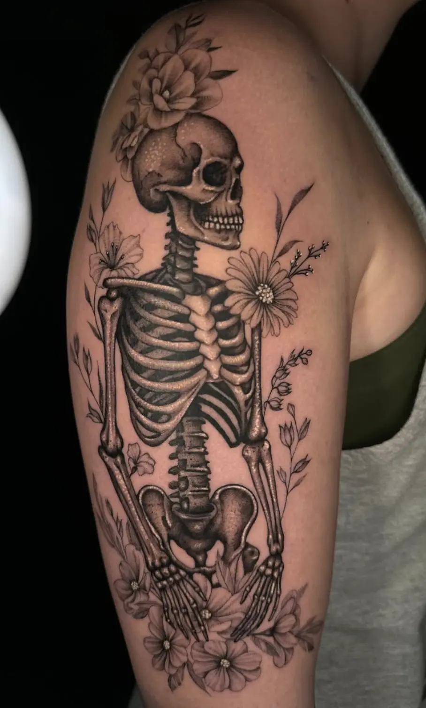
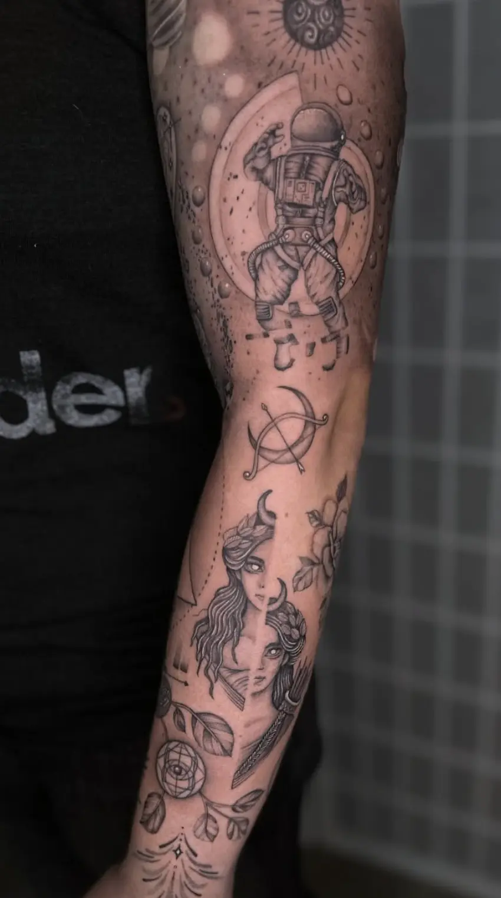

David Lay
[fine line] [whip shading] [black/grey] [microrealism] [geometric]
Based in Rockville, MD
Faith-driven tattoo artist blending purpose, precision, and creativity into custom work designed to tell your story through art.
Book NowMy name is David Lay, and I’m a tattoo artist specializing in geometric and black and grey tattooing. I’ve been professionally dedicated to tattooing for the past 5 years. My style is defined by fine details, clean compositions, and a strong focus on nature — including flowers, animals, geometry, and mandalas. I also enjoy creating large-scale projects such as sleeves or full pieces that combine realism with geometric elements. I’m passionate about creating custom tattoos that reflect each person’s story and identity, always striving for a balance between technique, aesthetics, and meaning.
PORTFOLIO






Become part of David Lay's evolving portfolio. Apply for a chance to work with him while space is available!
Book a sessionReal experiences from clients
“Had my piece done by Randy and i’m so happy with the way it came out. He has an incredible eye for detail and was able to translate my vision perfectly. He usually does traditional work, but is very versatile and open to doing any other styles. It was difficult to find an artist in the area who would do this specific style, so i’m really happy to have found him. I’m excited to work with him again on another piece!”
Katherine L
“Great experience getting tattooed by Randy! He helped me figure out the final idea for my traditional piece and was super flexible throughout the whole process. Really happy with how it turned out and definitely recommend him for traditional tattoos. Looking forward to working with him again.”
Cynthia B
“I had an amazing experience with Randy as my tattoo artist. From start to finish, he was incredibly professional and made me feel completely at ease. I came to him with an idea in my head, and he not only understood my vision but brought it to life with an incredible design that exceeded my expectations. His skill and creativity are top-notch, and I couldn't be happier with the result. Highly recommend Randy to anyone looking for a talented and professional tattoo artist!”
Damien H
The process when working with me

1. Consultation
We start with a conversation. You share your idea, references, and placement preferences. This step helps define the foundation of the piece.

2. Direction & Planning
Based on the consultation, the overall direction is established. Size, placement, flow, and structure are considered to ensure the design fits the body naturally.

3. Concept & Drawing
The design is developed from the agreed direction. This includes composition, line work, and visual balance. Each piece is created specifically for you.

4. Refinement
The design is reviewed and adjusted as needed. Small refinements are made to improve clarity, proportion, and overall cohesion.

5. The Tattoo
On the day of the appointment, the final design is applied. The focus is on precision, consistency, and comfort throughout the session.

6. Aftercare and Continuation
Aftercare instructions are provided to support proper healing. Some pieces may be revisited later for touch-ups or additional work if desired.